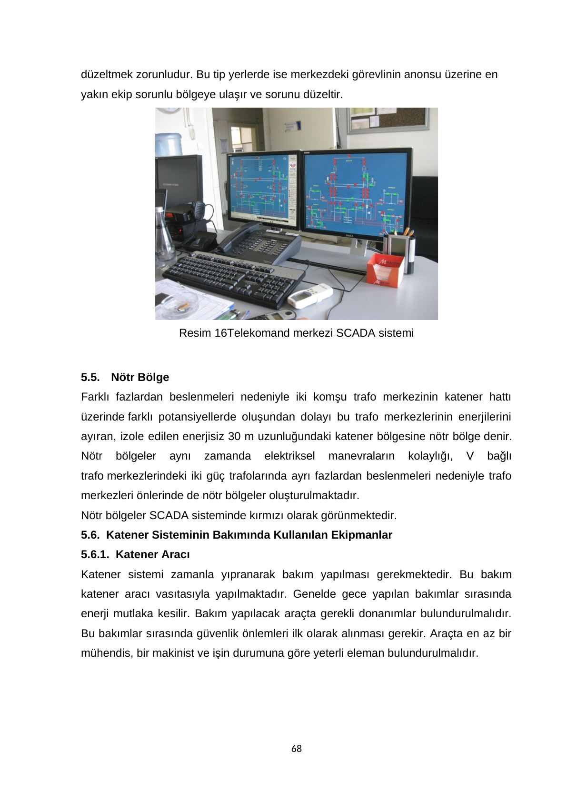
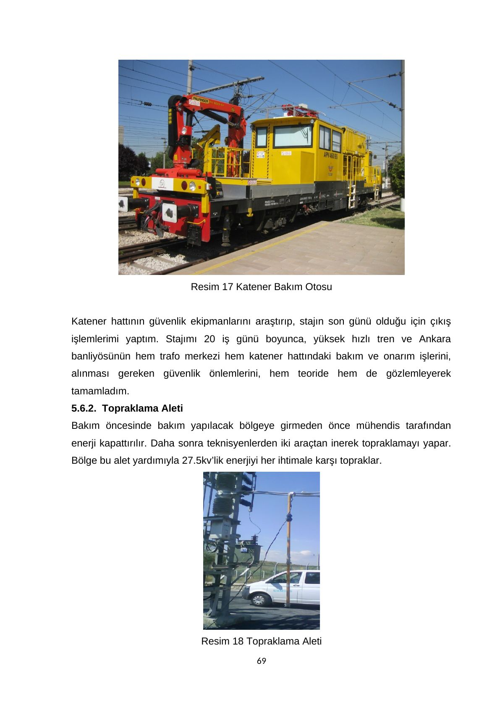

· STAJ
STAJ Yaz Stajı: TCDD YHT Elektrifikasyon, Katener Sistemi ve Yüksek Gerilim İş Güvenliği (staj raporu)
STAJ – Yaz Stajı · 02.09.2014 · 14.11.2026
Bu yazı, TCDD YHT Bölge Müdürlüğü Tesisler Müdürlüğü yaz stajı için bir arkadaşın hazırladığı 2014 tarihli, 70 sayfalık raporunun elektrifikasyon bölümüdür (12 sayfa): orta ve yüksek gerilim tesislerinde iş güvenliği, katener sistemi ve ekipmanları, geometrik karakteristikler, ayırma bölgeleri ve bakım ekipmanları. Raporun telekomünikasyon ve sinyalizasyon bölümleri ayrı yazılarda. Kişisel bilgiler çıkarılmıştır; orijinal sayfalar yazının sonunda PDF olarak indirilebilir.
5. Elektrifikasyon Sistemleri
5.1. Güvenlik
Orta ve yüksek gerilim tesislerine, görevlilerin dışındaki şahısların girmesi yasaktır. Ancak diğer şahısların tesislere girmesi özel izinle görevli bir elemanın kontrolünde ve kişisel koruyucu kullanmaları ile mümkün olacaktır.
Kesici ve ayırıcıların manevraları gerilim altında çalışma sayılmayacaktır. Stanka ile manevra yapılması gereken ayırıcıların manevralarında mutlaka stanka kullanılacaktır. Gerek stanka ile manevra yapılan ayırıcıların, gerekse mekanik kollu ayırıcıların manevralarında izole eldivenler, baret, izole ayakkabı ve tesisatın özelliğine göre seyyar izole halı (2x1 mt) veya tabure kullanılacaktır.
Orta gerilim tatbik edilmiş iletkenlere izole eldivenlerle dokunulmayacak ve bu iletkenler üzerinde sapı yalıtılmış aletlerle çalışılmayacaktır. Şalt sahası çalışmaları izole halı üzerinde ve tüm ölçü aletleri topraklanmış durumdayken yapılmalı koaksiyel kablo ekranı ve tuner konsol toprağına iyi bir şekilde irtibatlandırılmış olmalıdır. Sızdırma bobinlerinin toprak bağlantılarının güvenliğinden emin olunmadan ve hattın enerjisi kestirilmeden KESİNLİKLE canlı uç üzerinde çalışılmamalı ve bu uç açılmamalı.
OG ve YG tesislerinde her türlü çalışmalar aşağıdaki işlemlerden sonra yapılacaktır: İşlemlere başlamadan önce mutlaka iş görev emri düzenlenecektir.
Üzerinde çalışılacak tesisatı gerilimsiz bırakmak için önce kesiciler sonra ayırıcılar açılacaktır.
Kesici ve ayırıcıların her fazının teker teker açık olduğu kontrol edilecektir. OG şalt tesislerinde hücre kapıları ile bara ayırıcıları arasında bir kilit tertibatı olacaktır. Bu kilitleme tertibatı fidere ait bara ayırıcıları açılmadan hücre kapısının açılmasını önleyecek şekilde olacaktır.
Tesisin güvenlik altına alınması amacıyla kesme cihazları ile kumanda tertibatı üzerine GÜVENLİK KARTLARI İKAZ VE İHBAR levhaları konulacaktır.
Çalışma yerinde gerilim yokluğunun kontrolü iletkenlerin her biri üzerinde neon lambalı gerilim kontrol stankası hat tüfeği vb. özel aletler yardımı ile yapılacaktır. Çıplak iletkenlerin elle atılması şeklinde deneme yapılması yasaktır.
Gerilim yokluğu tespit edilince mahalli topraklama ve kısa devre etme işlemleri çalışma yerinin mümkün olduğu kadar yakınında ve çalışma yerini besleyebilecek bütün kollar üzerinde yapılacaktır. Topraklama ayırıcılarının kapatılmış olması halinde dahi bu işlem aynen uygulanacaktır.
Yukarıda anlatılan işlem enerji kaynaklarından ayrılmış olan hat parçaları üzerinde de yapılacaktır. Çünkü bu parçalar atmosferik aşırı gerilimler veya endüksiyon tesirinde kalmış olabilirler.
Topraklama ve kısa devre yapma işlerinde izole eldivenler, baret, izole ayakkabı, izole halı veya izole tabure ile stankalar kullanılacaktır.
Topraklama ayırıcısı bıçaklarının hepsinin kapalı olması şarttır.
Çalışma Yeri: levhalar, bayraklar, flamalar, kordonlar, bariyerler vb işaretlerle sınırlanacaktır.
Tesislerin müsait olduğu hallerde, gerilim altında kalmış bulunan kısımlarına yaklaşılmasını yasaklayıcı levhalar konulacaktır.
Tersten enerji gelmesi ihtimali bulunan fider hücrelerinde “Bu fidere tersten enerji gelebilir” ibaresi taşıyan uyarı levhaları asılacaktır.
Statik kondansatörlerin bulunduğu yerlerde her işlemden önce kondansatörler boşaltılacaktır. Boşaltma tertibatı bulunsa bile, kondansatörlerin herhangi bir çalışmadan önce bütün uçların topraklanması şarttır.
İşe başlamayı temin edecek olan İş Güvenliği Formu (İGF/1) mutlaka düzenlenecektir.
OG ve YG tesislerinde insanın temas olasılığı bulunan hücre kapısı, kesici şasesi, ayırıcı kolu vb. metal aksamın toprak şebekesi ile irtibatını sağlayan topraklama iletkenlerinin gözle görülen kısmı üzerinden geçiş dirençleri periyodik olarak kontrol edilecek ve bu işle ilgili çalışmaların sonucu kaydedilecektir.
Tesisatın yeniden gerilim altına alınması “İŞ BİTİRME BEYANI” İGF/2 Formu doldurularak işletme teknisyenine verilmesinden sonra yapılacaktır.
İşaret, bayrak, flama, plaka, tehlike uyarı bandı, levha güvenlik kartları vb güvenlik malzemeleri ile kısa devre topraklama irtibatı kaldırılmadan tesisat gerilim altına alınmayacaktır.
YG şalt sahalarında bulunan kesici ve ayırıcıların hangi fidere ait olduğunu gösterir yazılı levhalar uzaktan okunabilecek şekilde teçhizatın uygun yerlerine asılacaktır. OG fider hücrelerinin isimleri tek hat şemaları ve manevra talimatı hücre kapısı üzerinde bir levha olarak asılacaktır. Ayrıca hücrenin arka fensi ve bina dışındaki geçit izolatörü altına da fider isimlerini belirten levhalar asılacaktır. TM’nin en az 50x100 cm boyutunda bir tek hat şeması kumanda odasına asılacaktır.
OG hücrelerinde çalışma bittikten sonra gerekli güvenlik önlemleri kaldırılacak, korunma kapıları kapatılacak daha sonra enerji verilecektir.
OG tarafında kesici bulunmayan yardımcı servis trafosu OG ve AG tarafından devre dışı bırakılması AG tarafından başlamak üzere önce kesme sonra da OG tarafından ayırma cihazları açılarak yapılacaktır.
Bir transformatörün yağ seviyesinin kontrolünde kibrit vb alevli aydınlatma araçları kullanılmayacaktır.
İşletmede çalışan güç trafoları ve reaktörler gibi teçhizatlarda yağ depolarının tanklarda herhangi bir nedenle araştırma yapmak gerektiğinde gerekli emniyet tedbirleri alınmadan (yağın boşaltılması, tank içerindeki havanın sirküle edilmesi, gaz maskesi takılması vb işlemler yapılmadan) tank içerisine girilemeyecek ve tesisat üzerinde kaynak yapılmayacaktır.
Çalışmalar esnasında ölçü trafolarında AG veren tertipler (senkronizasyon fişleri vb) üzerinde gerekli kilitlemelerin yapılmış olması şarttır. Ayrıca bu transformatörlerin OG ve YG uçları topraklanacaktır.
Akım ölçü trafoları servisteyken sekonder devrelerinin açık kalmaması için gerekli önlemler alınacaktır. (Akım trafolarının sekonderleri beslediği aletler üzerinden kapalı devre edilecektir.) Gerilim ölçü trafolarının sekonderleri, bağlı herhangi bir alet yoksa uçları açık bırakılacaktır.
Transformatör merkezlerindeki OG sigortaları ancak ayırıcı açıldıktan ve gerilimi kesildikten sonra sigortanın her iki tarafında gerilim bulunmadığı kontrol edilecek ve daha sonra orijinali ile değiştirilecektir.
Gerilimi kesmek mümkün olmayan hallerde sigorta değiştirmek zorunda kalınırsa sigorta değiştirme pensi, baret, izole eldiven, izole tabure veya izole halı kullanılacaktır.
Şalt sahalarında stanka merdiven vb insan boyunu aşan uzunluktaki malzemeler yere paralel olarak taşınacaktır.
Ayırıcı vb. cihazlarının açılmasından sonra gerilim altında kalmış kısımlarla temas veya ark atlaması gibi herhangi bir tehlikenin bulunduğu hallerde iş güvenliği tedbirleri alınmadan sigorta değiştirilmeyecektir.
Direk tipi dağıtım güç trafolarında yapılacak çalışma türü ne olursa olsun gerilim önce AG’den daha sonra OG’den kesilecektir. Gerilim kontrolü yapılarak gerilimin olmadığı görüldükten sonra topraklama ve kısa başlanılacaktır.
devre işlemi yapılarak çalışmaya Harici tip sigortalı ayırıcılarda sigorta değiştirme işlemi her iki taraftan sigorta gerilimsiz bırakıldıktan ve kontrol edildikten sonra yapılacaktır.
OG güç transformatör sigortalarının değiştirilmesinde; önce AG şalterleri sonra OG ayırıcıları açılacaktır.
Sigorta alt ve üst uçları topraklanarak diğer fazlarla kısa devre yapılacak, daha sonra sigorta değiştirilecektir.
Ayırıcı bıçakları açıkken üst kontaklarda gerilim var ise o direk enerji altında olacağından bu durumda sigorta değiştirme işi yapılacaksa gerilim altında yapılan çalışma kuralları uygulanacaktır.
5.2. Katener
Katener sistemi trenlerin işletilebilmesi için gerekli olan enerjinin trafo merkezlerinden değişik taşıma düzenekleri ile taşındığı havai hat sistemidir. Bu sistem her türlü iklim ve çevre şartlarında, demir yolunun çeşitli geometrik şekillerinde, seçilmiş azami hızda kesintisiz, lokomotiflerin akım alıcı pantografında ve kontak telinde aşınmayı en aza indiren, can ve mal emniyetine zarar vermeden elektrikli vasıtalara elektrik enerjisi sağlayan elektrikli cer hava hattıdır.
Tren enerjiyi katenerden pantograf aracılığı ile alır. Akım, devresini raylar ve geri dönüş kabloları üzerinden tamamlar.
Bugüne kadar uygulanmış elektrifikasyon tesislerinde kullanılan gerilimler: - 750 V DC: Metro hatlarında kullanılan akım türü.
- 1500 V DC: Çoğu ülkelerde terk edilmiştir.
- 3000 V DC: Çoğu ülkelerde terk edilmiştir.
- 15 KV 16 2/3 Hz AC: İskandinav ülkelerinde kullanılan akım türü.
- 25 KV 50-60 Hz AC: Genellikle tercih edilir.
- 25 KV–50 Hz AC: Ülkemizde kullanılan akım türü.
- 50 KV 50–60 Hz AC: Ağır yük nakliyatlarının yapıldığı hatlarda kullanılır.
Bunlardan 750,1500 ve 3000 DC beslemeli katener sistemleri şehir içi ray sistemlerde yani metrolarda kullanılmaktadır.
Şehirler arası yolcu ve yük taşımacılığının yapıldığı daha fazla güce ihtiyaç duyulan elektrikli tren işletmeciliğinde orta gerilim AC besleme sistemleri kullanılmaktadır. Dünyada en yaygın olan ve tercih edilen besleme sistemi 25kV-50Hz olmuştur.
Bu besleme sisteminin Ankara’daki uygulaması Sincan-Kayaş banliyö hattıdır.
5.2.1. Katener Sisteminin Ekipmanları
Katener sisteminin ekipmanları şunlardır: bir taşıyıcı iletken (portör teli), bir kontak teli (seyir teli), kontak telinin taşıyıcı iletkene asılmasını sağlayan pandüller, Diğer irtibat tellerinden(besleme, topraklama telleri), Katener iletkenlerini taşıyan direkler ve konsol donanımları Topraklama, işaretli uyarılar, yükseklik sınırlama portalları vb. gibi teçhizatlardan meydana gelmektedir.
Katener otonun pantografı kaldırılarak ve aynı zamanda gözlemek suretiyle hattın ve kontak telinin (seyir telinin) kontrolü yapılmıştır.
5.2.1.1. Portör Teli

65 mm2 kesitli bronzdan(bakır ve kalay karışımı) oluşan bu iletken 15/10 mm 37 telden meydana gelmiştir. Etalon bakırınkine oranla %60 iletkenliktedir. Merkezi bir tel ve öz tarafında sol helezonvari sarılmış 6 telli birinci tabaka, bunun üstüne aksi yönde 12 tel sarılmıştır. Son olarak da birinci tabaka ile aynı yönde sarılmak suretiyle tel oluşturulmuştur. Dış çapı 10.5 mm, cer kopma yükü 4300 kg’dır. Metresinin ağırlığı 600 g dır.
Şekil 39 Portör Teli
5.2.1.2. Kontak Teli ( Seyir Teli)
Elektrolit set bakırdan yapılmış olup kesiti katenerden akan akıma göre azami hızlarla değişir.120 km/h 160 km/h hızlarda 107 mm 2 , 250 km/h hızlarda 120 mm2 kesitli tel kullanılır.750 V DC ve 1500 V DC gerilimli katenerlerde 120 mm2 ve 150 mm2 lik seyir telleri kullanılır. 107 mm2 çapı 12,24 mm, cer kopma yükü 3905 kg metresinin ağırlığı da 950 gramdır.%98 iletkenliğe sahiptir.
Resim 13 Seyir teli ve Pantograf
5.2.1.3. Pandül
5 mm çapında sert bakırdan veya örgülü bakırdan yapılan seyir telinin portör teline asılmasını sağlayan bir tel çeşididir. Görevi seyir telinin fleşsiz olarak asılmasını sağlamaktır. İki pandül arası en uzun mesafe 9 metredir. 9 metreyi geçen açıklıklarda seyir teli fleş yapar.
5.2.1.4. Direkler ve donanımları:
TCDD katener tesislerinde beton ve demir direkler kullanılmaktadır. Katener ana yollarda mekanik olarak birbirinden ayrı 1200-1400 m kısımlar halinde inşa edilir ve germe tertibatı ile donatılır. Taşıyıcı ve seyir teli her sıcaklıkta sabit bir kuvvetle gerilmiştir.
Resim 14 Direkler ve Donanımları
Km 393-398 arasında belirli yerlerdeki seyir teli yükseklikleri kontrol edilerek statik ölçüm sonuçları ile karşılaştırıldı ve ayarlandı. Seyir teli 2 cm yukarı kaldırıldı.
Resim 15 Seyir teli ayarlamasından bir görünüm
5.3. Katener Sisteminin Geometrik Karakteristikleri
5.3.1. Sistem Yüksekliği:
Direk hizasında seyir teli ile taşıyıcı tel arasındaki dikey mesafeye denir. Güzergâhın durumuna göre ve seçilen hıza göre tespit edilir. Ülkemizde sistem yüksekliği 1,4 metredir. Köprü altlarında, tünel ağızlarında ve tünellerde bu mesafeler 0,90-0,60-0,30 m olmaktadır. Tünellerde min. 0,30 alınır. Hızlı tren sistemlerinde 1,8 metredir.
5.3.2. Seyir Teli Yüksekliği
Seyir teli ile ray mantarı arasındaki dikey mesafeye denir. Ülkemizde normal şartlarda seyir teli yüksekliği 5,75 metredir. Ancak Köprü ve tünellerde 4,95 metreye kadar düşmektedir. Karayolu hemzemin geçitlerinde de bu mesafe 6,20 metreye kadar çıkmaktadır.
5.3.3. Direk Açıklıkları
Direk açıklıkları yolun geometrik yapısına göre (düz veya kurpyançapına göre) ve rüzgar alma durumuna gore 22,5m - 27m - 31,5m - 36m - 40,5m 45m - 49,5m 54m 63m olmalıdır.
5.3.4. Eksen kaçıklığı (Dezekseman)
Pantografta seyir teline sürtünen kömürlü kısmın hep aynı noktadan aşınmasını önlemek, aşınmayı eşit olarak dağıtmak amacıyla her direkte seyir telinin yol ekseninden kaçırılmasına Dezekseman denir.
Bunun için seyir teli yol ekseninden sağa ve sola eşit olmak üzere kaçırılır.1950 mm pantograflı elektrikli tren işletmeciliğinde kaçıklık ± 400 mm, 1600 mm pantograflı elektrikli tren işletmeciliğinde ise kaçıklık ± 200 mm olmalıdır.
Katener oto ile benim için son defa bakım onarıma çıktık. Direklerde dezekseman ayarı yapılacaktı. Bunun için mühendis telekomand merkezi ile görüşerek elektriği kesmesini istedi. İşimiz bitmeye yakınken diğer trenlerden gelen düşük gerilim ihbarı üzerine mühendis telekomanda geri dönerek hattın diğer tarafındaki trafonun 1 kademesinden 2 kademesine getirmesini istedi ve sorun çözüldü.
5.4. Katener Tesislerinde Ayırma Bölgeleri

Seyir teli ve portör birlikte katener hatları 1200 - 1400 m mekanik olarak birbirinden ayrı bölümler şeklinde düzenlenir. Bu her bir bölüme etap adı verilir. Etapların elektriksek birleşmesi ile elektrik enerjinin devamlılığı sağlanır.
5.4.1. Ekipman Bölge
Katener hatları mekanik olarak ayrı etaplardan oluşmaktadır. Pantografın devamlı bir şekilde katener hattından sürtünerek enerji alabilmesi için katener hatlarında elektrik enerjisinin devamlılığı gerekmektedir. Bunun için birbirini takip eden etapların elektriksel olarak iletkenlerle bağlandığı bölgeye ekipman bölge denir.
5.4.2. Seksiyonman Bölge
Katener hatlarındaki etapların elektrik enerjisinin devamlılığını etap sonları ve başlarında yapılan elektriksel bağlantıların ayırıcı (seksiyoner) vasıtasıyla yapılan bölgelere seksiyonman bölge denir.
Bu bölüm işletme ve bakım nedenleriyle Elektriksel manevralarda kolaylık sağlaması amacıyla oluşturulmuştur. Katener hatlarının elektriksel olarak izole edilmesi nedeniyle 25 KV AC sistemlerde eksen direğinde iki katener etabı arasında 50 cm bir mesafe bırakılır.
5.4.3. Antişöminman Bölge
Pantografın terenin hızına göre seyir teline sürtünürken uyguladığı yatay kuvvet nedeniyle seyir telinde dalgalanmaya veya gezintiye sebep olabilir. Bu olayı önlemek ve iletkenlerdeki mekanik gerilmeyi daha düzenli bir şekilde yaymak için iki gerdirme düzeninin arasına ve etapın tam ortasına bir antişöminman bölge oluşturulur.
Portör ve seyir teli antişöminmanı olmak üzere iki türlü bölge oluşturulur.
- Portör antişöminmanı: Taşıyıcı tel ile aynı özelligi taşıyan antişöminman kablosu (65mm2 bronz halat) taşıyıcı tele eksen direği üzerinde sabitlenir.
- Seyir teli antişöminmanı: Portör teli antişöminmanı yapıldıktan sonra seyir telinin portör teline sabitlenmesidir. mm2 bakır kablo ile yapılan irtibat 54 m den en fazla ve buna eşit açıklıklarda 9m aşağı açıklıklarda ise 18m üzerinde oluşturulur. Telekomand merkezi, katener hattında ve trafo merkezlerinde kontrolü elinde tutar. Sistemlerde en küçük bir hata dahi olsa burada kullanılan SCADA sisteminde görünür. Sorunlar merkezde bilgisayar başında düzeltileceği gibi bazı yerlerde elle düzeltmek zorunludur. Bu tip yerlerde ise merkezdeki görevlinin anonsu üzerine en yakın ekip sorunlu bölgeye ulaşır ve sorunu düzeltir.
Resim 16Telekomand merkezi SCADA sistemi
5.5. Nötr Bölge
Farklı fazlardan beslenmeleri nedeniyle iki komşu trafo merkezinin katener hattı üzerinde farklı potansiyellerde oluşundan dolayı bu trafo merkezlerinin enerjilerini ayıran, izole edilen enerjisiz 30 m uzunluğundaki katener bölgesine nötr bölge denir. Nötr bölgeler aynı zamanda elektriksel manevraların kolaylığı, V bağlı trafo merkezlerindeki iki güç trafolarında ayrı fazlardan beslenmeleri nedeniyle trafo merkezleri önlerinde de nötr bölgeler oluşturulmaktadır.
Nötr bölgeler SCADA sisteminde kırmızı olarak görünmektedir.
5.6. Katener Sisteminin Bakımında Kullanılan Ekipmanlar
5.6.1. Katener Aracı

Katener sistemi zamanla yıpranarak bakım yapılması gerekmektedir. Bu bakım katener aracı vasıtasıyla yapılmaktadır. Genelde gece yapılan bakımlar sırasında enerji mutlaka kesilir. Bakım yapılacak araçta gerekli donanımlar bulundurulmalıdır. Bu bakımlar sırasında güvenlik önlemleri ilk olarak alınması gerekir. Araçta en az bir mühendis, bir makinist ve işin durumuna göre yeterli eleman bulundurulmalıdır.
Resim 17 Katener Bakım Otosu
Katener hattının güvenlik ekipmanlarını araştırıp, stajın son günü olduğu için çıkış işlemlerimi yaptım. Stajımı 20 iş günü boyunca, yüksek hızlı tren ve Ankara banliyösünün hem trafo merkezi hem katener hattındaki bakım ve onarım işlerini, alınması gereken güvenlik önlemlerini, hem teoride hem de gözlemleyerek tamamladım.
5.6.2. Topraklama Aleti
Bakım öncesinde bakım yapılacak bölgeye girmeden önce mühendis tarafından enerji kapattırılır. Daha sonra teknisyenlerden iki araçtan inerek topraklamayı yapar. Bölge bu alet yardımıyla 27.5kv’lik enerjiyi her ihtimale karşı topraklar.
Resim 18 Topraklama Aleti
5.6.3. Emniyet Kemeri

Düşme riski olan yerlerde (Direk, şalt tesisleri, atölye vb.)çalışanı düşmeye karşı korumak amacıyla kullanılan kemer ve halatlardan oluşan güvenlik malzemesidir. Çalışanı belinden emniyetli bir şekilde kavrayan kemer kısmı ile direğe, plona vb. yerlere tutturmaya yarayan halat veya emniyet askıları bulunmalıdır.
Şekil 40 Emniyet Kemeri
5.6.4. İki Kutuplu OG Dedektörü
Orta gerilim ( 3000-36000 V arası ) olan yerlerde, iki nokta arasındaki gerilim farklılığını saptamak amacıyla tasarlanmış teçhizattır. Enerjinin kesildiği haberi mühendise geldikten sonra iki kutuplu OG dedektörü yardımıyla teknisyen tarafından hatta enerji olup olmadığı kontrol edilir.
Şekil 41 İki Kutuplu OG Dedektörü